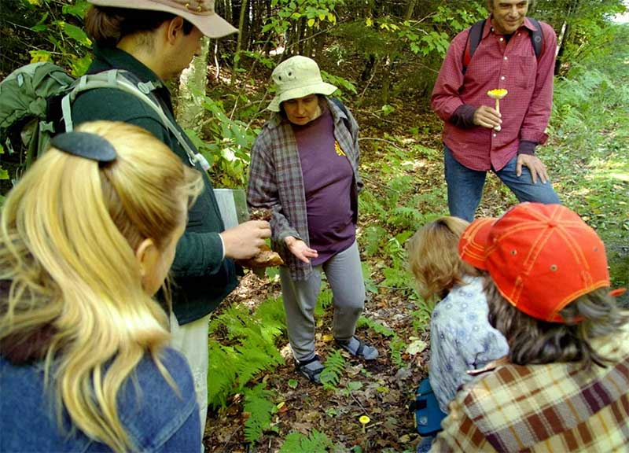

Park News & Alerts
- This is a new alert. I will add a link here.
- hello # 2
- Alert three
West on U.S. 2, then 3-1/2 mi. north on Little River Rd. Located 30 miles south of Burlington just off I-89.
Welcome
In the early 1800s, pioneers cleared fields, rocks, and stumps in Ricker Basin and Cotton Brook. A settlement of 50 or so families once lived in this area. The hard demands of the land and weather forced younger generations to abandon the farms. Today, old cemeteries, sawmill remains, old town roads, bridges and many cellar holes can still be seen as evidence of a past community.
On November 3 and 4 of 1927, torrential rains caused local rivers to rise and drove residents to their roofs. Between 1935 and 1938 the Civilian Conservation Corps (CCC), in cooperation with the U.S. Army Corps of Engineers, constructed Waterbury Reservoir. The CCC camp here was a fully operating, thriving community with more than 80 buildings, and housing 2,000 men at its peak. Now, half a century later, only a few solitary chimneys and concrete foundations remain.
Today, Little River State Park is one of the most popular parks in central Vermont. Waterbury Reservoir is particularly favored for boating with a portion of the reservoir devoted to quieter uses. Angling for bass and trout is as popular here as water-skiing.
Enjoy swimming beaches, play areas, boat rentals and a launch, and miles of hiking and mountain bike trails in the adjacent Mt. Mansfield State Forest. Self-guided history and nature trails are located close to the camping area.
Little River State Park, which is part of Mt. Mansfield State Forest, primarily consists of a campground with 81 tent/RV sites, 20 lean-tos and five cabins. This is central Vermont's largest and most popular campground. Three of the four restrooms include hot showers ($). A sanitary dump station is available, but no hookups. Within the campground, there are swimming beaches, play areas, a boat launch, ball field, and boat rentals for campers. (For day use boat rentals and swimming, see Waterbury Center State Park). Adjacent to the park are miles of hiking trails for campers and day users that take in the rich cultural and natural history of the area.
Park Interpreter Programs:
There is a Park Interpreter offering fun, hands-on activities at this park. Interpreters are park staff solely dedicated to helping you learn more about the natural and cultural history of this park.
Are you curious about some of the animals that live in the park? Are you wondering the history of this place you love to visit? Get answers to all your questions by attending interpretive programs, or by having a chat with the Park Interpreter during your visit. Some popular activities available are night hikes, nature crafts, campfire programs, amphibian explorations, and nature games.
Check out the calendar of current events to see some of the programs planned during your visit, look for program schedules displayed in the park, and stop by the nature center to learn more. Click here for a calendar of events at all parks on our department website